Breaking Perceptual Hashing
Based on work presented in  Squint Hard Enough:
Squint Hard Enough:
Attacking
Perceptual Hashing with Adversarial Machine Learning
Authored by
Jonathan
Prokos,
Neil Fendley,
Matthew Green,
Roei Schuster,
Eran Tromer,
Tushar Jois,
Yinzhi Cao
*Two Six Technologies,
†Johns Hopkins University Applied Physics Laboratory,
‡Johns Hopkins University,
§Vector Institute,
‖Tel Aviv University,
◊Columbia University,
¶City College of New York
USENIX Security 2023 Presentation
tldr; End-to-end (e2e) encrypted messaging systems have become widely adopted. In a hurry to provide content moderation, providers have begun using perceptual hash functions to detect illicit content. However, we show perceptual hashing is vulnerable to adversarial attacks, introducing a side-channel in these e2e systems.
What is Perceptual Hashing?
To start, a hash function is a function that takes arbitrary input and produces an output of a fixed length. This is useful for compressing data or verifying its integrity. Most people are familiar with cryptographic hash functions such as SHA-256 or MD5. Cryptographic hash functions are one-way functions meaning that it is computationally infeasible to find an input that produces a given output. Additionally, these algorithms are designed to be collision resistant meaning that it is computationally infeasible to find two inputs that produce the same output. Perceptual hash functions (PHF) do not share these cryptographic guarantees.
Although we show that perceptual hash functions are vulnerable to adversarial attacks, they are still useful for their intended purpose. The perceptual part of the name alludes to its design to embed image semantics into the resultant digest. This allows the hash to be locality sensitive — sometimes also called fuzzy hashing. To understand what this means, observe the example below:

The table above shows the input (top) and output (table content) for two types of hash functions (left). The input is a set of cat images where cat1' is an occluded version of cat1 with a red square placed on top.
As perceptual hash functions are designed to be locality sensitive, the red square does not affect its output much — it is not semantically important. The PHF produces a digest which remains largely the same when we make a small change to the input, while still producing a very different digest when comparing two semantically different images entirely. The cryptographic hash function, by contrast, is not locality sensitive and so even the red square significantly changes its output. This locality sensitivity is the key property of perceptual hash functions that makes them useful for content scanning: the same image re-encoded, slightly cropped, or lightly edited will still produce a very similar hash.
How are PHFs Used?
Perceptual hash matching has been deployed at enormous scale across the internet. YouTube introduced Content ID in 2007 for copyright infringement detection. Microsoft's PhotoDNA was integrated into Bing and SkyDrive in 2009, followed by Twitter in 2011 and Google in 2016. Facebook deployed PDQ and TMK+PDQF in 2019. These systems collectively scan billions of images per year. A 2018 study found that 1,348 ISIS recruitment videos could be matched from just 229 known examples — demonstrating the practical effectiveness of the approach at scale.
Suppose client A wants to send an image to client B using Facebook Messenger. Before forwarding that content, the provider performs a content check:

Facebook receives the image from client A and computes its perceptual hash. This hash is compared to a database of known illicit hashes — obtained from organizations such as the National Center for Missing and Exploited Children (NCMEC). This database does not come from either client and is used to filter content such as Child Sexual Abuse Material (CSAM) and non-consensual pornography. If the hash matches a known illicit digest, the image is blocked. Otherwise, it is forwarded to client B.
This setup works well for detecting known illicit content. But what about unknown illicit content — images that are genuinely harmful but have never been seen before? For this, providers such as Google or Apple can run the image through a neural network classifier before forwarding it. The neural network learns to recognize illicit content from examples and can flag novel material that doesn't match any existing hash.
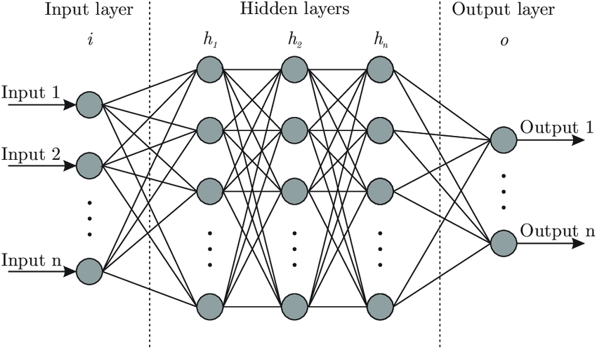
So where is the problem? Both of these approaches — hash matching and neural network classification — require the provider to see the plaintext image. This works fine in a traditional messaging system, but breaks down the moment we introduce end-to-end encryption.
The End-to-End Encryption Problem
In an end-to-end encrypted (E2EE) messaging system, only the sender and recipient can read the message. The provider's servers see only ciphertext — scrambled data they cannot inspect. This is excellent for user privacy, but it eliminates the provider's ability to perform any content scanning.

This tension became a matter of public policy in 2019, when U.S. Attorney General William Barr, joined by senior officials from the UK, Australia, and the U.S. Department of Homeland Security, sent an open letter directly to Facebook. The letter urged the company to delay its plans to deploy end-to-end encryption across its platforms, citing fears that doing so would "severely erode" the ability of law enforcement to detect CSAM and other serious crimes.
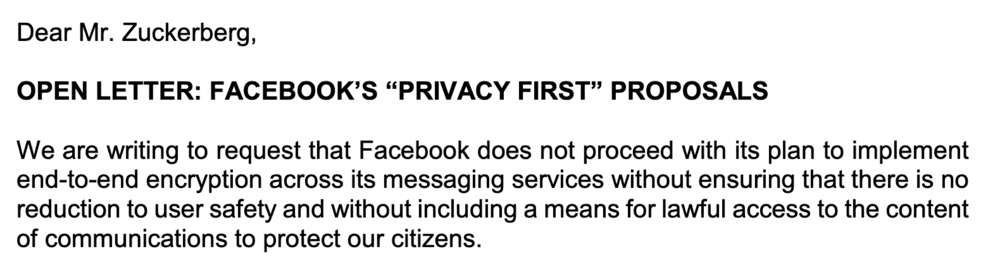
"We are committed to working with you to focus on reasonable proposals that will allow Facebook and our governments to protect your users and the public, while protecting their privacy. Our technical experts are confident that we can do so while defending cyber security and supporting technological innovation..."
This political pressure spurred researchers and providers to explore ways of incorporating perceptual hash matching into E2EE protocols — attempting to perform content scanning without the provider ever seeing the plaintext content. Three main architectures emerged.
Client-Side Scanning
The simplest approach moves the scanning entirely onto the user's device. The app is provisioned with the database of illicit content hashes. When a user prepares to send an image, the app computes its hash locally and checks it against the database. Only if a match is found does it alert the provider. When a detection happens, the image is blocked and transmitted to the server for review.

The problem: the hash database — and potentially the neural network weights — now live on every user's phone. A skilled reverse engineer can extract them. This opens up a range of attacks:
- Collision generation — craft a non-CSAM image whose hash collides with a known illicit hash, triggering a false detection. A bad actor could frame innocent users or suppress protected speech by manufacturing false positives.
- Detection avoidance — perturb a known illicit image so its hash no longer matches anything in the database, evading the filter entirely.
- Content reconstruction — attempt to recover the original illicit images from the hash database, or use the hashes to train a generative model to synthesize similar content. With the rise of image-generation AI, a leaked hash database could theoretically be used to guide a model toward producing illegal content. These are unacceptable consequences when dealing with something as serious as Child Sexual Abuse Material.
All of these potential impacts follow directly from a single root cause: giving the attacker access to the hash function and database. In short, client-side scanning turns the content moderation system against itself.
Edge Hashing
An alternative approach, exemplified by Microsoft's "Edge Hash" proposal, computes hashes at the client and transmits them to the provider for comparison — without ever storing the illicit database on-device. This preserves the secrecy of the database, but means the provider receives a fingerprint of every image a user sends, creating a persistent surveillance channel for all user content regardless of whether it is illicit. If the hash function leaks enough information to classify image attributes — or if digests can be used to reconstruct image content — this becomes a significant privacy concern well beyond CSAM detection.
Two-Party Computation (2PC)
The most cryptographically sophisticated approach uses a two-party computation (2PC) protocol to perform the hash comparison without either party revealing their secret inputs. In this scheme, the client holds the image (and its hash), while the provider holds the database of illicit hashes. Using a 2PC protocol — such as private set intersection (PSI) or homomorphic encryption — they jointly determine whether there is a match, with neither side learning the other's private data.

A variant of this approach was prototyped by Apple for its iCloud Photos CSAM scanning system. In theory, 2PC preserves both user privacy and the secrecy of the hash database. In practice, however, 2PC does not solve the underlying problem: if an attacker can manipulate the hash values themselves — by crafting collision images or evasion perturbations — the security guarantees collapse. The 2PC protocol faithfully computes the comparison, but if the comparison is based on a broken hash function, the output is meaningless. This is precisely the vulnerability our work exposes.
A Case Study: Apple's NeuralHash
Late in our research, Apple announced NeuralHash, a perceptual hash function based on a standard convolutional neural network, intended for client-side CSAM scanning in iCloud Photos. Because NeuralHash is end-to-end differentiable — it is, at its core, just a neural network — standard adversarial machine learning techniques apply directly. Within days of the announcement, the machine learning community had produced targeted hash collisions: pairs of visually distinct images that NeuralHash considers identical.
A cat and a dog — producing the identical NeuralHash digest. The collision was generated using standard gradient-based adversarial ML techniques in a matter of minutes. Apple indefinitely delayed the deployment of NeuralHash shortly after. This episode illustrated a key principle: any perceptual hash function that is fully differentiable is trivially vulnerable to adversarial attack. But it also raised a harder question — what about the hash functions that had been quietly deployed in production for years?
PhotoDNA and PDQ
The two most widely deployed perceptual hash functions are Microsoft's PhotoDNA and Facebook's PDQ. Together they scan billions of images per year across platforms including Facebook, Dropbox, and Cloudflare.
Unlike NeuralHash, neither PhotoDNA nor PDQ is a neural network. Both compute hashes through a pipeline of classical image processing steps that are non-differentiable. Standard gradient-based adversarial ML does not apply directly. Additionally, PhotoDNA's algorithm has never been publicly released; Microsoft and NCMEC require cooperating organizations to sign non-disclosure agreements to obtain even a binary implementation. For our experiments, we used a binary copy extracted from forensic software published by other researchers, treating it entirely as a black box — we have no access to its internal implementation, only the ability to query it with an input image and observe the output digest.
Algorithm Internals
While PhotoDNA's internals are confidential, independent researchers have partially reverse-engineered the pipeline. PhotoDNA processes an image through: normalization and grayscale conversion; Sobel gradient edge detection to extract structural features; partitioning the gradient image into a grid of blocks; and concatenating block statistics into a 144-value numeric vector. Digests are compared via L1-norm distance, with a baseline matching threshold of Δd = 1,800.
PDQ (Facebook's open-source alternative) operates through: two-pass Jarosz blur filters for smoothing; computation of L1 norms of quantized gradients and rescaling; a 2D Discrete Cosine Transform (DCT) to capture frequency-domain features; and quantization around the median to produce a compact 256-bit binary digest. PDQ digests are compared using Hamming distance, with a baseline matching threshold of Δd = 90.
The figure below shows a blue jay from ImageNet alongside the visualized output digests of both PhotoDNA (center) and PDQ (right). Although the connection between input and digest is not visually obvious, the digests are derived directly from the pixel content via edge detection and frequency-domain transforms.
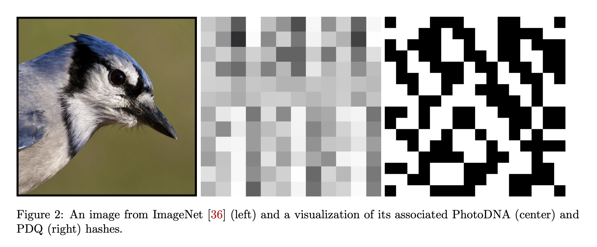
Like all perceptual hash functions, PhotoDNA and PDQ are designed to be locality sensitive: small changes to an image produce small changes to the digest. The figure below demonstrates this: a yellow star placed over the bird's face barely perturbs either digest, because the occlusion does not change the image's dominant structural features.
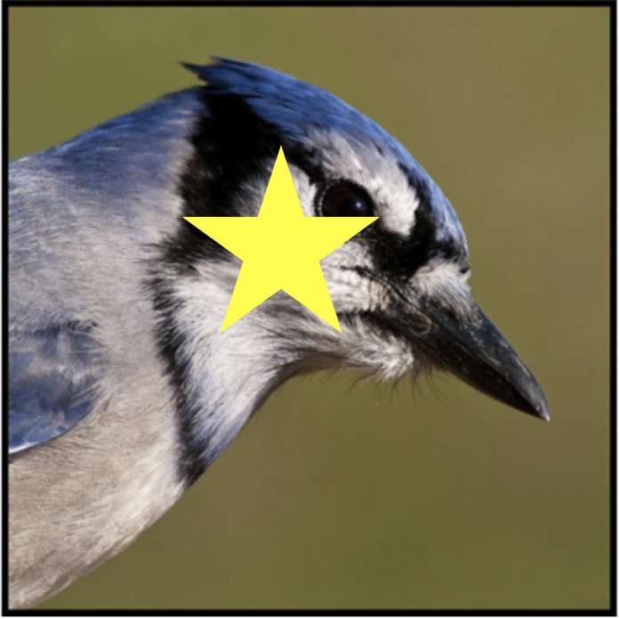
The crucial difference between these algorithms and NeuralHash is that they are not neural networks and are non-differentiable — meaning we cannot directly access any gradients when running adversarial attacks. This makes the standard adversarial ML toolkit inapplicable and requires an entirely different approach. So the question becomes: given that NeuralHash was broken in days using off-the-shelf gradient methods, can we break PhotoDNA and PDQ without access to any gradients at all?
Attacking PhotoDNA and PDQ
Because PhotoDNA and PDQ are non-differentiable (and PhotoDNA is a black box), we developed a hash-function-agnostic gradient estimation framework using Monte Carlo sampling. The key insight: even without a closed-form gradient, we can approximate one by repeatedly querying the hash function with small random perturbations and measuring how each perturbation shifts the hash distance to our target.
At each step, we take our current candidate image and sample a set of small random perturbations around it (50 per step in our implementation). For each perturbation, we compute the change in hash distance to the target. We then take a weighted average of all perturbations, weighted by their effect on the distance, as our gradient estimate and step in that direction. This process treats the hash function as a complete black box — we only need to be able to query it with an image and receive a digest in return.
Attack 1: Targeted Second-Preimage
In the targeted second-preimage attack, we are given only a target hash digest D — not the original image — and a source image S. Our goal is to iteratively perturb S until its hash collides with D, producing a new image that the hash system considers identical to the unknown target. Critically, in a real-world scenario, an attacker only needs access to the hash database — they do not need the original illicit image at all. The hash digest alone is sufficient to mount the attack.
In the E2EE threat model this enables several attacks. For example: an attacker with access to the hash database crafts an innocuous-looking image whose hash matches a known illicit digest, then sends it to a target user. When that user forwards the image through an E2EE-PHM system, they are falsely flagged — enabling surveillance, user framing, or censorship of legitimate speech.
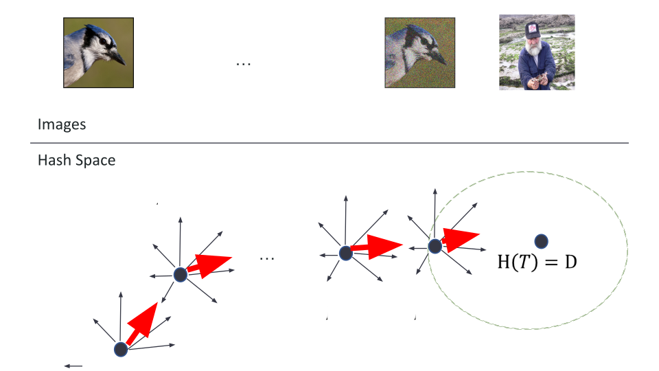
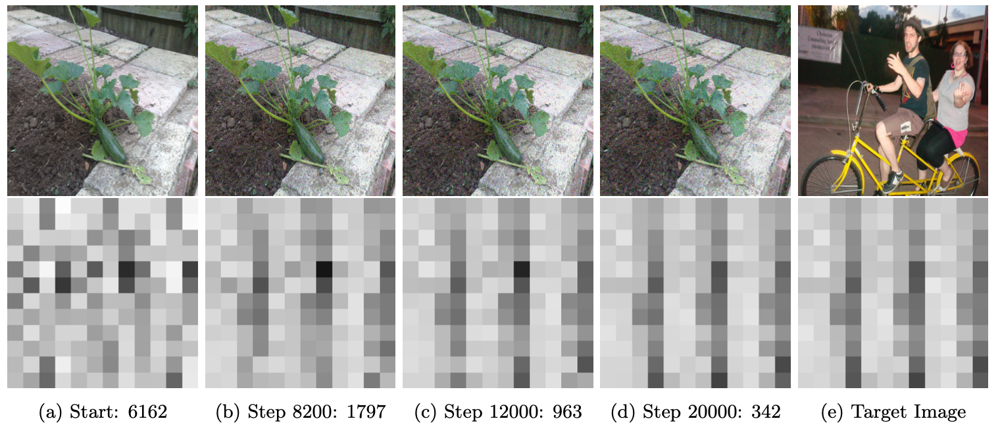
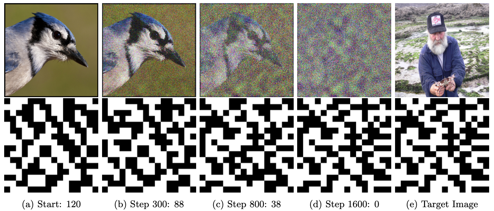
Attack 2: Detection Avoidance
The detection avoidance attack is the inverse: given an image that would be flagged by the hash system, we produce a visually identical version whose hash falls outside the detection threshold. We adapt the HopSkipJump adversarial framework (Chen et al., 2020) to this setting.
The algorithm works by finding and walking along the hash function's decision boundary — the line in image space between "match" and "no match." We start from a random image that does not collide with the target, then:
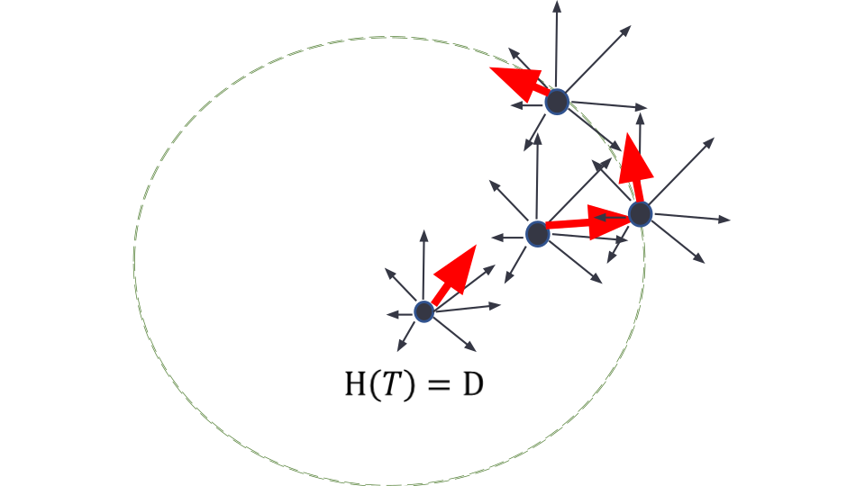
- Find the point on the line between our non-colliding image and the target where the hash status switches — this is the decision boundary.
- At that boundary point, generate random perturbations and use them to compute a gradient estimate, as in Attack 1.
- Take a step in the gradient direction, moving the boundary point toward images with less visual noise while staying outside the hash match threshold.
- Repeat until convergence.
The result is a perturbed image that remains visually equivalent to the original but whose hash is no longer recognized by any matching system — and because neither the hash nor the image matches, further dissemination of the avoidant image by others will also go undetected.
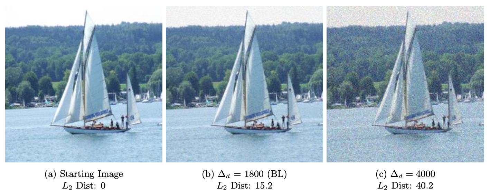
Results
Before presenting the quantitative results, consider a question posed during the talk:
Which pair of images below would you consider a "match"?
Most people — quite reasonably — would identify images (a) through (d), all showing the same plant against a garden wall, as matches with each other. The bicycle rider looks completely different. But according to PhotoDNA, the image in column (d) — after 20,000 iterations of adversarial perturbation — is a match with the bicycle. Its hash distance of 342 is well below the baseline threshold of 1,800 used in production deployments. The two plants you would call a match? PhotoDNA disagrees.
We ran the targeted second-preimage attack against 30 randomly selected image pairs from the ImageNet validation set.
For PhotoDNA, 17 of 30 image pairs reached the baseline collision threshold (Δd = 1,800) within 20,000 iterations, with a minimum achieved distance of 342. Every pair eventually achieved a perfect collision given more iterations — the attack converges universally, it just takes longer for harder pairs.
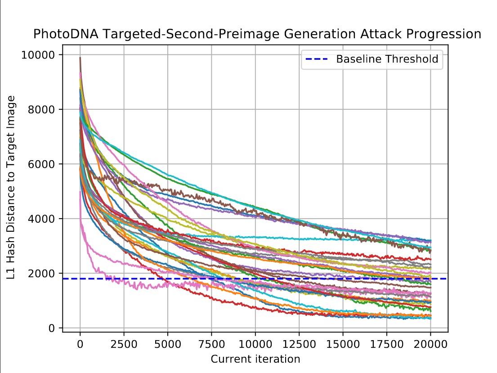
For PDQ, all 30 of 30 image pairs reached the baseline threshold (Δd = 90), typically within 3 hours and 600–6,000 iterations. PDQ is in this sense more vulnerable than PhotoDNA — the attack succeeds on every pair without exception. However, as visible in the bluejay-to-old-man progression shown earlier, PDQ attacks produce noticeably more visual noise. This is because PDQ's digest is roughly one-fifth the size of PhotoDNA's (256 bits vs. 144 numeric values), so each pixel change has a coarser effect on the hash, causing the attack to overshoot and take larger steps. By step 1,600 the hash distance reaches zero — a perfect collision — while the source image still retains recognizable structure.
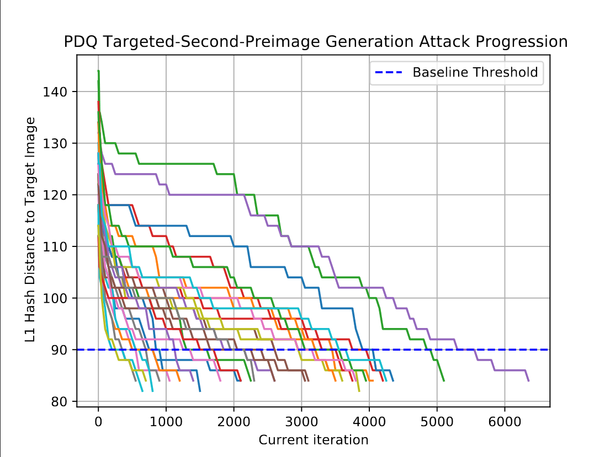
The animations below show the attack progression in real time. As adversarial perturbations accumulate, the source image's hash visualization gradually transforms to match the target — while the image itself remains visually recognizable. The left panel shows the source image and its evolving hash; the right panel shows the fixed target image and its hash.
PhotoDNA
Threat Models
Our paper formalizes a taxonomy of attacks on E2EE-PHM systems. Beyond the technical demonstrations, it is worth being explicit about the concrete threat scenarios each attack enables.
Targeted-Collision Surveillance
An attacker — which could be a nefarious service provider, a state actor with access to the hash corpus, or an insider threat — uses the targeted second-preimage attack to craft an innocuous image whose hash collides with a known illicit digest.
This image can be posted publicly or sent directly to a target user. That user, without any knowledge of the attack, forwards it to someone else through an E2EE-PHM system. The system detects a hash match and flags the user — all based on an image they had no reason to suspect was malicious. A sufficiently resourceful attacker could even submit the crafted image to NCMEC's corpus directly: once added to the hash database, any user who sends it (perhaps a politically charged photograph or protected speech) will be flagged system-wide. This enables targeted deanonymization of users — striking at the core privacy guarantee of E2EE messaging.
Detection Avoidance and Dissemination
A bad actor possessing illicit content uses our detection avoidance attack to produce a perturbed version whose hash falls outside the detection threshold. This image can then be freely distributed through E2EE-PHM systems without triggering any alerts. Crucially, once an evasion image is generated and disseminated, it continues to evade detection even when forwarded by other users — neither the image nor its hash matches anything in the database. The evasion is persistent and network-wide.
User Data Leakage via Edge Hashing
In edge-hashing E2EE-PHM systems, the hash of every image a user sends is transmitted to the provider. Even without seeing the image itself, the provider can attempt to recover information about its content from the digest. Two leakage vectors are possible:
- Preimage attribute recovery — train a classifier to predict image attributes (e.g., is it outdoors? does it contain a face?) directly from the hash digest. Our preliminary experiments showed that classification accuracy on PHF digests can approach that of classifying on raw images in some settings, meaning the digest is far from information-free.
- Preimage reconstruction — use a conditional GAN (such as pix2pix) to reconstruct an approximation of the source image directly from its hash visualization. While reconstruction quality is imperfect, the result demonstrates that perceptual hash digests encode meaningful visual information about the source.
2026 Updates
The policy and research landscape around perceptual hashing has shifted considerably since this work was published at USENIX Security 2023. Here is a summary of notable developments.
Apple Officially Abandons NeuralHash
In December 2022, Apple confirmed it had permanently cancelled its CSAM scanning system — going beyond the "indefinite delay" language used at the time of publication. In Apple's own words, the system would inject "the potential for a slippery slope of unintended consequences. Scanning for one type of content, for instance, opens the door for bulk surveillance and could create a desire to search other encrypted messaging systems across content types." Apple simultaneously expanded iCloud's end-to-end encryption to cover most user data, including Photos.
Meta Enables Default E2EE on Facebook Messenger
In December 2023, Meta rolled out default end-to-end encryption for all personal chats and calls on Messenger and Facebook, built on the Signal Protocol and Meta's own Labyrinth Protocol. This is directly relevant to the paper's threat model, which uses Facebook Messenger as its motivating example — Meta went ahead with E2EE despite the 2019 Barr letter and sustained government pressure. Group Messenger chats remain opt-in for E2EE.
EU Chat Control: Ongoing and Unresolved
The EU's "Chat Control" proposal — which would have mandated client-side CSAM scanning across messaging platforms including E2EE apps — has had a turbulent trajectory. Chat Control 1.0, which provided a voluntary legal basis for platforms to scan private messages, expired on April 3, 2026 after the European Parliament voted to reject further extensions. Despite losing the legal basis, Google, Meta, Microsoft, and Snap announced they would continue voluntary scanning regardless.
The permanent replacement, Chat Control 2.0 (formally the CSAR regulation), remains under negotiation as of April 2026, with trilogue discussions resuming in May and a political deal targeted for July. Critically, the most controversial element — mandatory scanning of end-to-end encrypted messages — was dropped from the proposal. The current draft instead allows messaging services to voluntarily install monitoring software and refocuses on age verification and risk-mitigation measures.
UK Online Safety Act
The UK Online Safety Act, passed in September 2023 and in force as of early 2024, takes a different approach. It legally requires a wider range of platforms to use hash matching for known CSAM. Its Section 121 — nicknamed the "Spy Clause" by digital rights groups — empowers Ofcom to direct messaging platforms to use "accredited technology" to scan end-to-end encrypted messages for CSAM. As of early 2026, no such accredited technologies have been designated; Ofcom's final guidance is expected by autumn 2026. Apple, Signal, and WhatsApp have all reiterated that they would rather withdraw from the UK market than compromise E2EE for their users.
The AI-Generated CSAM Problem
Perhaps the most significant development for the technical landscape of content scanning is the explosion of AI-generated CSAM. The NCMEC CyberTipline recorded a 1,325% increase in reports involving generative AI in 2024 alone — from roughly 4,700 reports in 2023 to over 67,000. The Internet Watch Foundation documented a 260-fold increase in AI-generated CSAM videos in 2025. Because this content is synthetic, it by definition has no entry in any hash database. This creates a fundamental gap in hash-based detection systems: a growing category of illegal material is completely invisible to perceptual hash matching, reinforcing the need for classifier-based approaches alongside — and potentially instead of — PHF-based systems.
Follow-On Research
Our paper has spurred a thread of follow-on work examining the security of perceptual hash functions from multiple angles:
- Hash inversion attacks — A December 2024 preprint demonstrated the first known inversion attacks against Apple's NeuralHash and Facebook's PDQ using generative AI, obtained with minimal computational resources. This is relevant to the edge-hashing threat model described in our work: if digests can be inverted to approximate the source image, the privacy implications for systems that transmit hashes to a provider are severe. (arxiv:2412.06056)
- Robustness re-evaluation — A June 2024 paper assessed PhotoDNA, PDQ, and NeuralHash against hash-evasion and hash-inversion attacks and reported that these algorithms demonstrate "significant robustness" in some experimental settings — a finding that is in tension with our work and others, and reflects ongoing debate in the community about what threat models and attack budgets are realistic. (arxiv:2406.00918)
- DINOHash — adversarially robust PHF — Researchers have proposed DINOHash, the first perceptual hashing model to incorporate adversarial training, derived from the DINOv2 self-supervised vision transformer. DINOHash reports substantially higher robustness against gradient-based adversarial attacks than NeuralHash or classical DCT-based schemes, and improves average bit accuracy by 12% over prior state-of-the-art. This represents the most promising direction to date toward a PHF that could withstand the attacks described in our paper, though real-world deployment and independent evaluation at scale remain open questions. (OpenReview: DINOHash)
USENIX Slides (there are speaker notes!)
The following figures are pulled from our USENIX submission.
Figure 1 shows the results of our targeted second-preimage attack at both low and high threshold levels. Figure 2 shows our detection avoidance attack at the baseline collision threshold as well as at a significantly higher threshold. Figures 3 & 4 show the progress of our targeted second-preimage attack as the collision threshold is lowered. Figures 5 & 6 show a comparison of the performance of this attack using various gradient optimization methods.
Why This Matters
Our results demonstrate that PhotoDNA and PDQ — the two most widely deployed perceptual hash functions — are vulnerable to machine learning-based adversarial attacks. This is not merely an academic finding. In the context of E2EE-PHM systems, these vulnerabilities translate to concrete real-world threats:
- Surveillance. An attacker with access to a hash database can craft innocuous-looking images that trigger false positives, deanonymizing users who forward the image through an E2EE system.
- Framing and censorship. A malicious actor — including a compromised service provider or a state-sponsored attacker — can cause a politically charged or otherwise protected image to be flagged as illicit, silencing its distribution without any legitimate basis.
- Detection evasion. Illicit content can be subtly perturbed to evade any hash-based filter, rendering the entire scanning system ineffective against a sufficiently motivated adversary.
The fundamental issue is that perceptual hash functions were never designed to be adversarially robust. Their specification documents say as much explicitly. In traditional server-side deployments, this was an acceptable limitation: providers could perform human review of flagged content, the hash database was tightly controlled, and the plaintext image was always available to verify matches. None of these safeguards exist in an E2EE setting. Hash-based matching is woven directly into the encryption mechanism, and the confidentiality of every licit message depends on the security properties of the underlying hash function.
By demonstrating that PhotoDNA and PDQ are not secure against adversarial attack, we show that existing perceptual hash functions are likely insufficiently robust to be deployed in E2EE content scanning systems. While it is still important to have mechanisms in place to perform illicit content monitoring, utilizing PHFs within an end-to-end encrypted setting breaks the security guarantees provided by that encryption, and in some cases could provide a side-channel to leak incredibly sensitive data. The debate around client-side scanning is ongoing — in 2022 the EU Commission formally proposed mandating CSAM scanning in messaging applications, raising questions about whether this requirement would extend to E2EE apps. Our work provides the technical evidence that should inform that debate.
We disclosed our results to both Microsoft and Facebook prior to publication. In the interest of responsible disclosure, we do not release our full attack code publicly. Our results were independently validated through USENIX's artifact review process, earning both the Functional and Reproduced artifact evaluation badges — confirming that the attacks described in the paper are real and reproducible. The paper linked above contains full technical details, and we are available to discuss our methodology with researchers and policymakers.